| Role | Product Designer |
| Duration | 2 days |
| Tags | Web Design, Redesign, Laws of UX |
Fidelity's NetBenefits® is an online portal that provides millions of employees access to their benefits information, including retirement plans, health insurance, and more. Throughout the years, the platform has evolved to meet the changing needs of its users, incorporating new technologies and modern design patterns to enhance the user experience.
With that being said, there is always room for improvement. As one of its users, I know firsthand what it's like interacting with the NetBenefits UI, what works and what doesn't. I can see areas on the platform where other users may become confused or overwhelmed. And the page that gets the most interactions, as with most other web applications, is the homepage.
For that reason, I wanted to focus on redesigning the homepage, identifying potential weakpoints in the current layout, and create an alternative design by employing my knowledge of Gestalt psychology and other UXD principles like the Laws of UX.
When attempting to redesign the homepage, I needed to understand what the NetBenefits app and its current homepage offer to its users and what they expect. After analyzing the app and the current layout of the homepage, I summarized the key features as follows:
Before I began drafting wireframes, I had to ensure that I include everything the homepage should have. That meant determining what is important and needs to stay (or be added) and what isn't as important and should be removed (or rearranged).
Based on my initial analysis, it seemed to me that the intent of the homepage is to provide a high level overview of account statuses and benefit subscriptions along with the proper redirect links for users to manage them. In addition to basic retirement account related information, the current homepage also has educational resources for users to learn more about how they can better utilize their benefits and optimize their investing to suit their needs.
With that, I determined that everything currently on the homepage was essential to its purpose and should be retained in the redesign. It became apparent to me that the homepage isn't there just to diplay numbers and links, but to also facilitate user understanding and engagement with their benefits.
NetBenefits should help people reach their investment goals, not just provide users their balances. This commitment to helping customers makes the usage of retirement planners, visuals like charts and graphs, as well as positive, personal language, all the more important.
Knowing what needs to be on the homepage, the next step for me was to identify the areas on the existing homepage that could be improved.
I scanned the current homepage layout and content, tested several links, and took note of my observations.
Where I believed the current homepage design falls short is with the organization of content on the page. While the contents themselves all seemed to have a place on the homepage, I felt the way they were arranged did not seem logical. And with many cards and different types of information being conveyed all at once, I realized how this could be overwhelming for some users and hinder their ability to find the information they need quickly.
As I observed the layout, it seemed like each card was trying to grab my attention, such as the frequent usage of bolded text, bright colors, and groupings of unrelated information. As a result, I found it difficult to focus on any one piece of information. Addressing the additional cognitive load from this, therefore, will be my main challenge in this redesign.
Working from top to bottom, I started by revisiting the notification messages on the homepage.
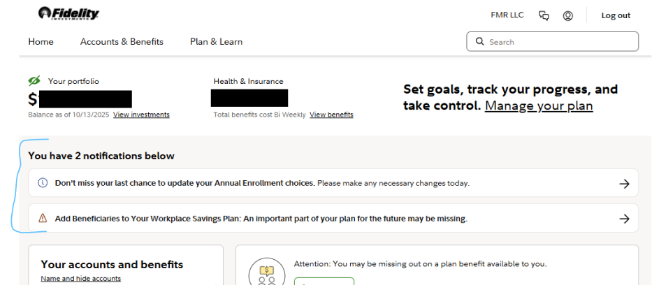It seemed odd to me that the notifications would appear to be sandwiched between the portfolio balance and account information sections. Because it isn't related to either section, it looked out of place and didn't feel right in its current spot.
A better place for notifications is at the very top—below the nav bar and above the portfolio balance. Since notifications often convey urgent information, this placement ensures users see them first and can act accordingly.
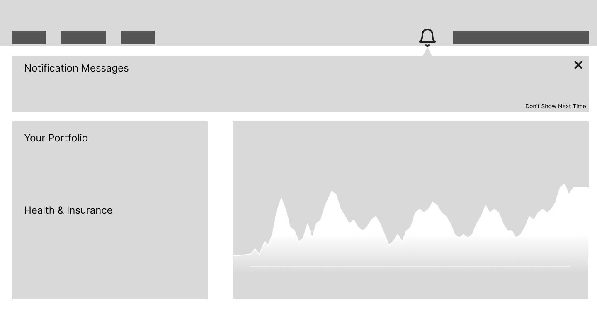I also wanted to give users the option to close notifications if they are not relevant or if they want to revisit them at a different time, something that the current notifications bar does not allow.
To accomplish this, I added two things: an "X" button to close the notification as well as a bell icon for users to conveniently access their notifications whenever they need to. Adding a dot indicator to the bell icon for unread notifications would also help users keep tabs on their messages.
Next, I looked at how to rearrange and improve the rest of the content on the homepage. The biggest thing here was to look for inconsistencies in content grouping and visual hierarchy. Which elements should go together? Does the current layout for this particular card make sense? If not, where can I move the content so that it flows better?
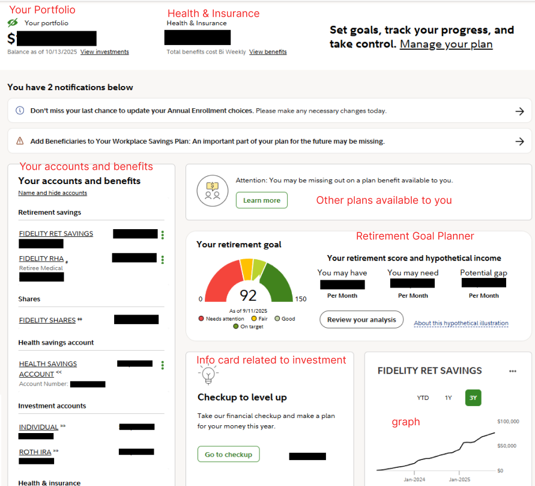With the notification bar out of the way, I explored several content organization options based on my prior analysis and annotations.
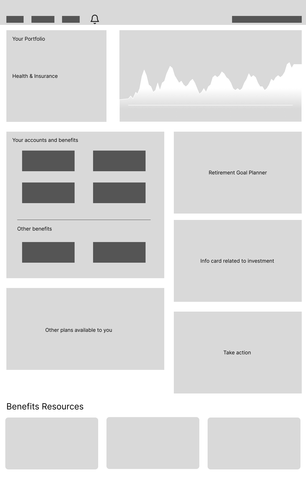In my wireframes, I explored the following ideas:
One thing I had noticed when analyzing the original homepage was that the small graph present only provided a visual indicator of one's retirement savings, specifically the 401k account, over time. Previously, I had always thought this reflected the entire balance showing under "Your portfolio", so I didn't realize until upon closer inspection.
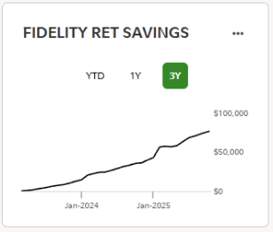I found this mismatch to be slightly misleading, as users may not immediately recognize what the graph represents, despite it being labeled "Fidelity Ret Savings". By replacing it with a portfolio savings graph, it would just accurately reflect the number presented in the portfolio balance.
In addition to replacing the graph to reflect the entire portfolio balance, I also wanted to enlarge it so that users could better see the graph details.
Another observation I made regarded the placement of items within the dashboard. Currently, "Your portfolio", "Health & Insurance", and "Set goals" text are positioned side-by-side on the same bar.
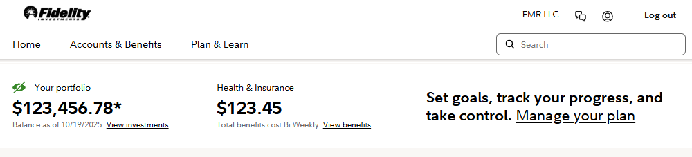Initially, I didn’t see the need to change this layout. But with the enlarged graph at the top, it made more sense to surface the portfolio balance alongside it. Naturally, the “Health & Insurance” cost would follow and be displayed with “Your portfolio.”
As for "Set goals", the last item in the original dashboard, I decided it wouldn't fit in the same arrangement and planned for it to be moved elsewhere.
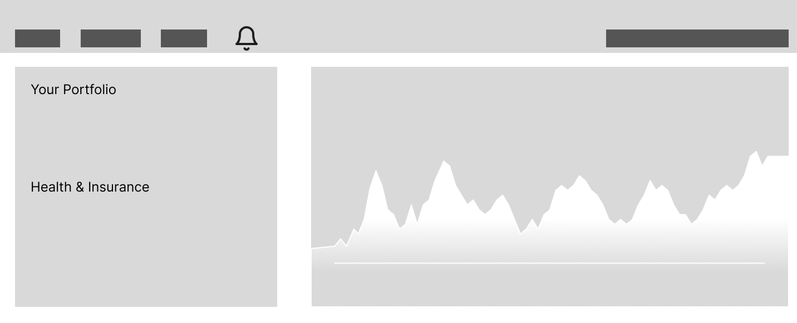However, when I navigated to Fidelity's brokerage website to reference the graph showing the entire portfolio balance, I saw that the portfolio balance was displayed directly on top of the graph.
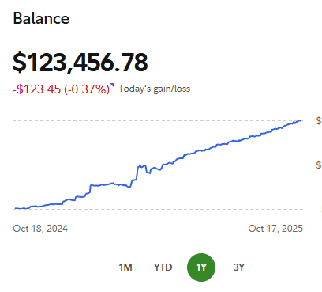Thinking about it some more, I thought it would be best to follow suit as not only did it make more sense to have the portfolio balance be tied directly to the graph, but it would also mean following established design conventions.
This meant that "Health & Insurance" would have to have its own separate card which is also a plus as that meant the two values that were previously otherwise unrelated, save for the fact they both pertained to the user's financial statuses, could now be displayed in a more cohesive manner.
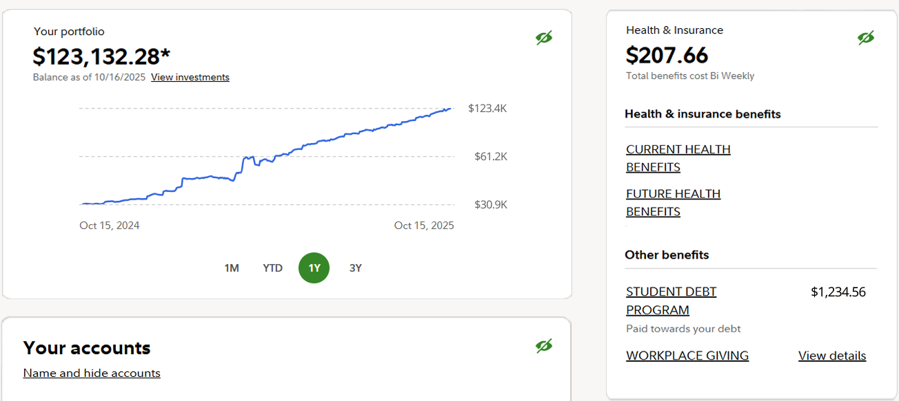This also allowed me to separate benefits from accounts (previously grouped as “Your accounts and benefits”), creating a clearer distinction and more room for the text.
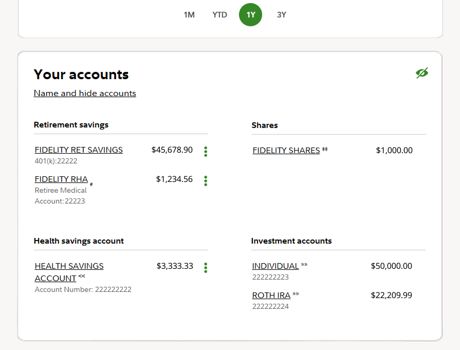While the various benefits links would be placed directly under "Health & Insurance", the new "Your accounts" would get its own card, placed right after the new portfolio dashboard as it directly relates to the sum shown in the portfolio balance as well as the contents displayed in the graph.
The remaining pieces left to be addressed were these less important but still needed cards:
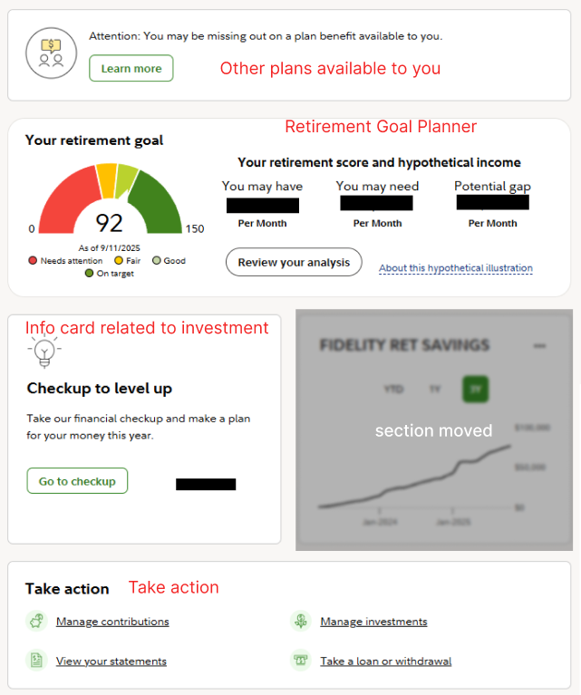Because these cards are more informational or secondary, I moved them below or to the side of the primary portfolio and benefits sections. They remain available but out of the main flow.
By moving most of the content cards to the side, these secondary actions are now less intrusive and allow users to focus on the primary tasks at hand.
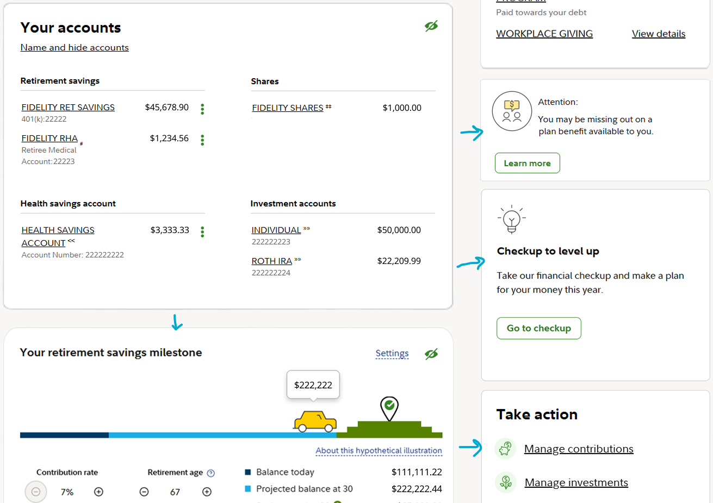The positioning for each card was also intentional, with the "Attention" missing benefits card placed directly after the benefits card and the "Checkup to level up" card placed to the right of the "Your Accounts" card where all the money information is.
I placed the Retirement Goal Planner section, AKA "Your retirement goal" or "Your retirement savings milestone" (they both share the same card), after "Your Accounts" because it was a lower priority item but still relevant to investing.
Another change I made here was to include the "Set goals" text, which had previously been removed from the original dashboard, in the Retirement Goal Planner section.
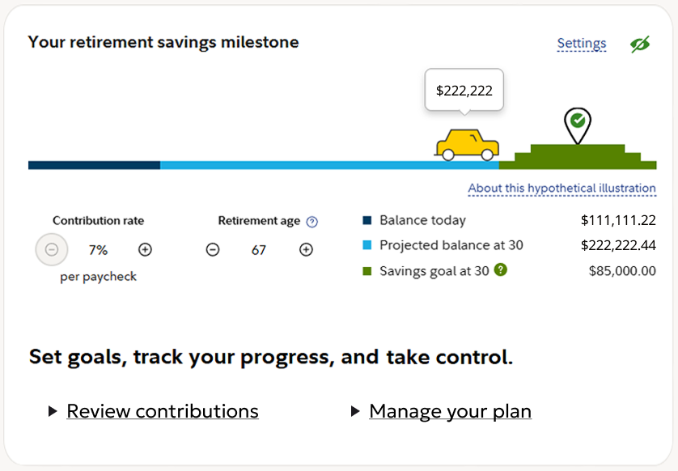I felt it was appropriate to have the text here as it is related to retirement goal setting and could be helpful for anyone looking to take any action related to their retirement planning.
For added flexibility, I gave each card with sensitive numeric values the eye icon button in the top right corner to hide or show the amounts as needed. I also added a main control button to the left of the "Your portfolio" card to control all sensitive information visibility across all cards on the homepage.
This project was a great exercise for me to practice my skills as a designer and draw upon my knowledge of design principles to enhance a product important to many people's financial well-being. Being a user of the platform myself, I was aware of the pain points that I had and used them as inspiration for my design solutions.
One thing I haven't explored extensively yet is the use of an area graph instead of a traditional graph showing the overall portfolio performance over time. This could provide a more comprehensive view of how different assets contribute to the total portfolio.
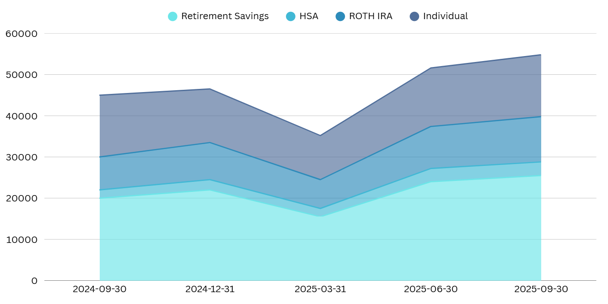I experimented with generating one of these charts, and it looks promising. It could improve at‑a‑glance understanding of portfolio performance. The tradeoff is added visual complexity, so supporting multiple display options—and letting users choose their preferred chart—may be best.
Even though I replaced the original retirement savings chart, there's value in a chart focused on retirement savings. However, a single‑account growth line has limited value without a breakdown—for example, how much growth comes from 401(k) matching versus personal contributions.
As shown above, an area chart could address this, but I didn't want this project to go out of scope by going into the weeds designing a new chart, so I opted for a simpler alternative instead. However, I do think this is a worthwhile avenue for future exploration.